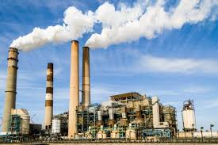

class="fade-in"🔥 Causes of Global Warming
class="fade-in" The primary cause of global warming is the burning of fossil fuels such as coal, petrol, and diesel for electricity, transportation, and industries. These fuels release large amounts of carbon dioxide into the atmosphere.
class="fade-in" Deforestation is another major cause. Trees absorb carbon dioxide and help maintain balance in the environment. When forests are cut down for agriculture and urban development, the stored carbon is released back into the atmosphere.

class="fade-in" Industrial pollution, vehicle emissions, and improper waste management also contribute significantly to greenhouse gas emissions. Rapid urbanisation and population growth further increase the demand for energy and resources.
